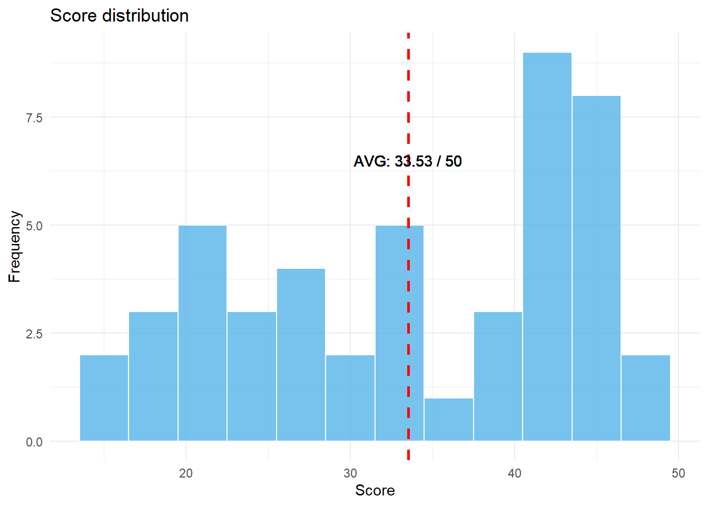
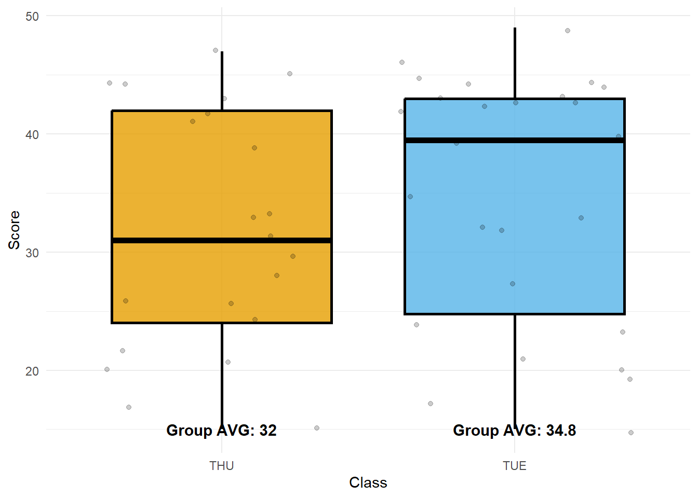
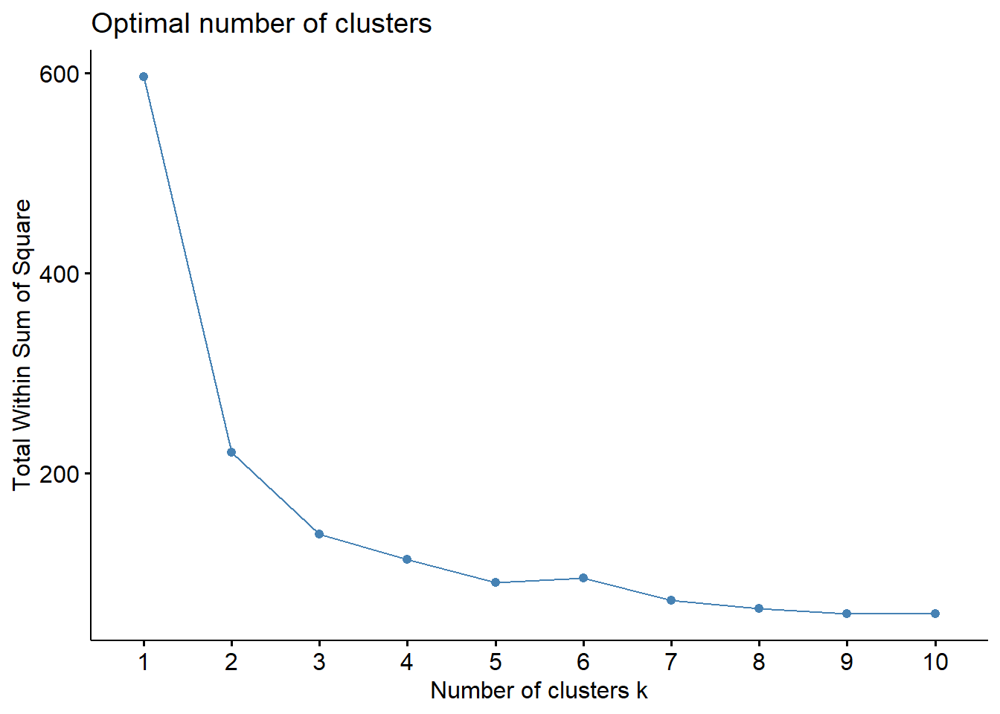
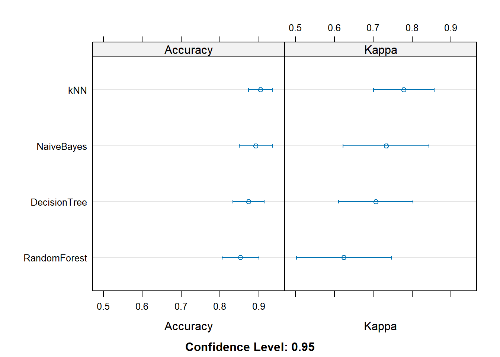

QZ #2
31 May (Wed) 13:00-15:00
Score distribution
summary(my_data) Class Score
Length:47 Min. :15.00
Class :character 1st Qu.:24.00
Mode :character Median :33.00
Mean :33.53
3rd Qu.:43.00
Max. :49.00 Max score: 49 / 50
Min score: 15 / 50
AVG score: 33.53 / 50
Histogram
ggplot(my_data, aes(x = Score)) +
geom_histogram(binwidth = 3, color = "white", fill = "#56B4E9", alpha = 0.8) +
# Add vertical line for mean
geom_vline(aes(xintercept = mean(Score)),
color = "red", linetype = "dashed", linewidth = 1) +
geom_text(aes(x = 33.53, y = 6.5, label = "AVG: 33.53 / 50")) +
# Add x and y axis labels
labs(x = "Score", y = "Frequency",
title = "Score distribution") +
# Set a simple theme
theme_minimal()
Box-plot by classes
# Calculate average scores for each class
class_averages <- my_data %>%
group_by(Class) %>%
summarize(avg_score = mean(Score))
ggplot(my_data, aes(x = Class, y = Score, fill = Class)) +
geom_boxplot(alpha = 0.8, color = "black", size = 1) +
# Add individual data points with jitter
geom_jitter(alpha = 0.2) +
# Add text labels for average values
geom_text(data = class_averages,
aes(x = Class, y = 15,
label = paste0("Group AVG: ", round(avg_score, 1))),
color = "black",
size = 4,
fontface = "bold") +
# Remove legend
guides(fill = FALSE) +
# Choose color palette
scale_fill_manual(values = c("#E69F00", "#56B4E9")) +
# Add x and y axis labels
labs(x = "Class", y = "Score") +
# Set a simple theme
theme_minimal()
Date and Location
Date: 31 May (Wed) 13:00 - 15:00
Location: Room 312 (School of Communication, the same building)
Notice
- Quiz will be administered through Google Forms.
- Please bring your laptop for the quiz.
- You are allowed to access any information through the Internet
- However, communication with others is strictly prohibited.
- Do not use any messaging apps (e.g., KakaoTalk, TikTok, Line, WeChat, etc.) during the quiz.
- Upon completion of the quiz, you are required to submit your code.
QZ
PART I. Linear Regression
We will be utilizing the USArrests data, which was previously discussed in class, for our regression analysis. Omitting the data description as it has already been covered in class.
Let’s import USArrests data (Use the code below)
data("USArrests")
summary(USArrests) Murder Assault UrbanPop Rape
Min. : 0.800 Min. : 45.0 Min. :32.00 Min. : 7.30
1st Qu.: 4.075 1st Qu.:109.0 1st Qu.:54.50 1st Qu.:15.07
Median : 7.250 Median :159.0 Median :66.00 Median :20.10
Mean : 7.788 Mean :170.8 Mean :65.54 Mean :21.23
3rd Qu.:11.250 3rd Qu.:249.0 3rd Qu.:77.75 3rd Qu.:26.18
Max. :17.400 Max. :337.0 Max. :91.00 Max. :46.00 How many observations in the dataset?
- 50
How many variables in the dataset?
- 4
Crimes like Assault, Murder, and Rape are more likely to happen in cities. Linear regression analysis was performed to find out which variable among Assault, Murder, and Rape was the most Urban-population dependent variable. (See the code below)
m1 <- lm(Assault ~ UrbanPop, data=USArrests)
m2 <- lm(Murder ~ UrbanPop, data=USArrests)
m3 <- lm(Rape ~ UrbanPop, data=USArrests)
summary(m1)
Call:
lm(formula = Assault ~ UrbanPop, data = USArrests)
Residuals:
Min 1Q Median 3Q Max
-150.78 -61.85 -18.68 58.05 196.85
Coefficients:
Estimate Std. Error t value Pr(>|t|)
(Intercept) 73.0766 53.8508 1.357 0.1811
UrbanPop 1.4904 0.8027 1.857 0.0695 .
---
Signif. codes: 0 '***' 0.001 '**' 0.01 '*' 0.05 '.' 0.1 ' ' 1
Residual standard error: 81.33 on 48 degrees of freedom
Multiple R-squared: 0.06701, Adjusted R-squared: 0.04758
F-statistic: 3.448 on 1 and 48 DF, p-value: 0.06948summary(m2)
Call:
lm(formula = Murder ~ UrbanPop, data = USArrests)
Residuals:
Min 1Q Median 3Q Max
-6.537 -3.736 -0.779 3.332 9.728
Coefficients:
Estimate Std. Error t value Pr(>|t|)
(Intercept) 6.41594 2.90669 2.207 0.0321 *
UrbanPop 0.02093 0.04333 0.483 0.6312
---
Signif. codes: 0 '***' 0.001 '**' 0.01 '*' 0.05 '.' 0.1 ' ' 1
Residual standard error: 4.39 on 48 degrees of freedom
Multiple R-squared: 0.00484, Adjusted R-squared: -0.01589
F-statistic: 0.2335 on 1 and 48 DF, p-value: 0.6312summary(m3)
Call:
lm(formula = Rape ~ UrbanPop, data = USArrests)
Residuals:
Min 1Q Median 3Q Max
-18.644 -5.476 -1.216 5.885 27.937
Coefficients:
Estimate Std. Error t value Pr(>|t|)
(Intercept) 3.78707 5.71128 0.663 0.510
UrbanPop 0.26617 0.08513 3.127 0.003 **
---
Signif. codes: 0 '***' 0.001 '**' 0.01 '*' 0.05 '.' 0.1 ' ' 1
Residual standard error: 8.626 on 48 degrees of freedom
Multiple R-squared: 0.1692, Adjusted R-squared: 0.1519
F-statistic: 9.776 on 1 and 48 DF, p-value: 0.003001Which dependent variable has the most significant relationship with the urban population?
- Rape
Choose a model in which only the intercept is a statistically significant coefficient.
- m2
According to the result from summary, choose the model that fits the most.
- m3
This time, I thought that Murder was influenced by Assault, Rape, and UrbanPop, so I performed the following regression analysis. (Multiple regression, see the code below).
m4 <- lm(Murder ~ Assault+Rape+UrbanPop, data=USArrests)
summary(m4)
Call:
lm(formula = Murder ~ Assault + Rape + UrbanPop, data = USArrests)
Residuals:
Min 1Q Median 3Q Max
-4.3990 -1.9127 -0.3444 1.2557 7.4279
Coefficients:
Estimate Std. Error t value Pr(>|t|)
(Intercept) 3.276639 1.737997 1.885 0.0657 .
Assault 0.039777 0.005912 6.729 2.33e-08 ***
Rape 0.061399 0.055740 1.102 0.2764
UrbanPop -0.054694 0.027880 -1.962 0.0559 .
---
Signif. codes: 0 '***' 0.001 '**' 0.01 '*' 0.05 '.' 0.1 ' ' 1
Residual standard error: 2.574 on 46 degrees of freedom
Multiple R-squared: 0.6721, Adjusted R-squared: 0.6507
F-statistic: 31.42 on 3 and 46 DF, p-value: 3.322e-11Which variable has a statistically significant effect on Y (dependent variable) among X (independent variables)?
- Assault
Use m4 (above model) to predict the Murder of a new state. New state is Assault=100, Rape=20, UrbanPop=60. Choose the correct predicted Murder of the new state.
new_state <- data.frame(Assault=100, Rape=20, UrbanPop=60) predict(m4, newdata = new_state)1 5.200726- 5.20
PART II. Non-linear Regression
The code below creates a factor-type variable ‘Murder_high’ that is 1 when Murder is greater than 10 (Zero if not), and stores it in USArrests_new.
USArrests %>%
mutate(Murder_high=as.factor(ifelse(Murder > 10, 1, 0))) -> USArrests_new
summary(USArrests_new) Murder Assault UrbanPop Rape Murder_high
Min. : 0.800 Min. : 45.0 Min. :32.00 Min. : 7.30 0:35
1st Qu.: 4.075 1st Qu.:109.0 1st Qu.:54.50 1st Qu.:15.07 1:15
Median : 7.250 Median :159.0 Median :66.00 Median :20.10
Mean : 7.788 Mean :170.8 Mean :65.54 Mean :21.23
3rd Qu.:11.250 3rd Qu.:249.0 3rd Qu.:77.75 3rd Qu.:26.18
Max. :17.400 Max. :337.0 Max. :91.00 Max. :46.00 How many observations have Murder_high equal to 1?
- 15
Following code is about fitting the new data to Logit model by using ‘glm’ function. See the result and answer the questions below.
m5 <- glm(Murder_high~Assault+Rape+UrbanPop,
data=USArrests_new,
family='binomial')
summary(m5)
Call:
glm(formula = Murder_high ~ Assault + Rape + UrbanPop, family = "binomial",
data = USArrests_new)
Deviance Residuals:
Min 1Q Median 3Q Max
-2.0767 -0.3681 -0.1885 0.3334 1.7199
Coefficients:
Estimate Std. Error z value Pr(>|z|)
(Intercept) -5.65955 2.88481 -1.962 0.049781 *
Assault 0.03682 0.01094 3.366 0.000762 ***
Rape -0.04290 0.05858 -0.732 0.463976
UrbanPop -0.02252 0.03647 -0.618 0.536865
---
Signif. codes: 0 '***' 0.001 '**' 0.01 '*' 0.05 '.' 0.1 ' ' 1
(Dispersion parameter for binomial family taken to be 1)
Null deviance: 61.086 on 49 degrees of freedom
Residual deviance: 29.252 on 46 degrees of freedom
AIC: 37.252
Number of Fisher Scoring iterations: 6Choose the significant X variables related to Murder_high.
- Assault
Define 3 new states as shown in the code below, and when the m5 model predicts the probability that Murder_high is 1 (use the type=‘response’ option),
new_state_1 <- data.frame(Assault=100, Rape=70, UrbanPop=60)
new_state_2 <- data.frame(Assault=200, Rape=20, UrbanPop=30)
new_state_3 <- data.frame(Assault=250, Rape=0, UrbanPop=10)Choose all states with a predicted probability of being Murder_high is 1 equals 0.5 or greater. (Murder_high가 1일 확률이 0.5보다 큰 것을 고르시오).
predict(m5, newdata = new_state_1, type = "response")1 0.001775415predict(m5, newdata = new_state_2, type = "response")1 0.5425262predict(m5, newdata = new_state_3, type = "response")1 0.9651047new_state_2
new_state_3
Assault’s coefficient in the ‘m5’ model is the log odds ratio. Choose Assault’s Odds ratio.
exp(m5$coefficients)(Intercept) Assault Rape UrbanPop 0.003484092 1.037504921 0.958010049 0.977727163- 1.038
PART III. Clustering
Let’s use iris dataset. First thing we need to do for Clustering is the code below.
df <- scale(iris[-5])
summary(df) Sepal.Length Sepal.Width Petal.Length Petal.Width
Min. :-1.86378 Min. :-2.4258 Min. :-1.5623 Min. :-1.4422
1st Qu.:-0.89767 1st Qu.:-0.5904 1st Qu.:-1.2225 1st Qu.:-1.1799
Median :-0.05233 Median :-0.1315 Median : 0.3354 Median : 0.1321
Mean : 0.00000 Mean : 0.0000 Mean : 0.0000 Mean : 0.0000
3rd Qu.: 0.67225 3rd Qu.: 0.5567 3rd Qu.: 0.7602 3rd Qu.: 0.7880
Max. : 2.48370 Max. : 3.0805 Max. : 1.7799 Max. : 1.7064 Choose the best explanation the reason why we use ‘scale’ before clustering.
- to minimize the bias caused by different units
This is the second step for the k-means clustering.
library(factoextra)Welcome! Want to learn more? See two factoextra-related books at https://goo.gl/ve3WBafviz_nbclust(df, kmeans, method = "wss")
See the result, and choose the incorrect explanation of this step.
In this step, we can get a recommendation about the number of clusters ‘k’
k is bigger the better (Incorrect)
The appropriate k is 3, but 2 or 4 is also Ok.
Total Within Sum of Square is the smallest at k = 10
The code below is k-means clustering with k=3. Then, I created ‘iris_cluster’ by merging the original iris dataset and the clustering result. See the result of the table(iris_cluster$Species, iris_cluster$cluster), and answer the questions.
# Compute k-means with k = 3
set.seed(123)
km.res <- kmeans(df, 3, nstart = 25)
iris_cluster <- data.frame(iris, cluster = km.res$cluster)
table(iris_cluster$Species, iris_cluster$cluster)
1 2 3
setosa 50 0 0
versicolor 0 39 11
virginica 0 14 36As a result of clustering, which species are best seperated?
- Setosa
PART IV. Apriori
The code below is about Apriori algorithm for items {A, B, C, D, E, ...} to find association patterns.
# Apriori
itemList<-c("A, B, C",
"A, C",
"B, D",
"D, E, A",
"B, F",
"E, F",
"A, F",
"C, E, F",
"A, B, E",
"B, E, F, A, C",
"E, F, G, H, D",
"A, B, C")
write.csv(itemList,"ItemList.csv", quote = FALSE, row.names = TRUE)
library(arules)Loading required package: Matrix
Attaching package: 'Matrix'The following objects are masked from 'package:tidyr':
expand, pack, unpack
Attaching package: 'arules'The following object is masked from 'package:dplyr':
recodeThe following objects are masked from 'package:base':
abbreviate, writelibrary(arulesViz)
txn = read.transactions(file="ItemList.csv",
rm.duplicates= TRUE,
format="basket",sep=",",cols=1);
basket_rules <- apriori(txn,
parameter = list(minlen=2,
sup = 0.2,
conf = 0.1,
target="rules"))Apriori
Parameter specification:
confidence minval smax arem aval originalSupport maxtime support minlen
0.1 0.1 1 none FALSE TRUE 5 0.2 2
maxlen target ext
10 rules TRUE
Algorithmic control:
filter tree heap memopt load sort verbose
0.1 TRUE TRUE FALSE TRUE 2 TRUE
Absolute minimum support count: 2
set item appearances ...[0 item(s)] done [0.00s].
set transactions ...[9 item(s), 13 transaction(s)] done [0.00s].
sorting and recoding items ... [6 item(s)] done [0.00s].
creating transaction tree ... done [0.00s].
checking subsets of size 1 2 3 done [0.00s].
writing ... [13 rule(s)] done [0.00s].
creating S4 object ... done [0.00s].summary(basket_rules)set of 13 rules
rule length distribution (lhs + rhs):sizes
2 3
10 3
Min. 1st Qu. Median Mean 3rd Qu. Max.
2.000 2.000 2.000 2.231 2.000 3.000
summary of quality measures:
support confidence coverage lift
Min. :0.2308 Min. :0.4286 Min. :0.2308 Min. :0.9286
1st Qu.:0.2308 1st Qu.:0.5714 1st Qu.:0.3846 1st Qu.:1.2381
Median :0.2308 Median :0.6667 Median :0.4615 Median :1.4444
Mean :0.2663 Mean :0.6516 Mean :0.4260 Mean :1.4020
3rd Qu.:0.3077 3rd Qu.:0.7500 3rd Qu.:0.4615 3rd Qu.:1.4857
Max. :0.3077 Max. :1.0000 Max. :0.5385 Max. :1.9500
count
Min. :3.000
1st Qu.:3.000
Median :3.000
Mean :3.462
3rd Qu.:4.000
Max. :4.000
mining info:
data ntransactions support confidence
txn 13 0.2 0.1
call
apriori(data = txn, parameter = list(minlen = 2, sup = 0.2, conf = 0.1, target = "rules"))inspect(basket_rules) lhs rhs support confidence coverage lift count
[1] {C} => {B} 0.2307692 0.6000000 0.3846154 1.3000000 3
[2] {B} => {C} 0.2307692 0.5000000 0.4615385 1.3000000 3
[3] {C} => {A} 0.3076923 0.8000000 0.3846154 1.4857143 4
[4] {A} => {C} 0.3076923 0.5714286 0.5384615 1.4857143 4
[5] {B} => {A} 0.3076923 0.6666667 0.4615385 1.2380952 4
[6] {A} => {B} 0.3076923 0.5714286 0.5384615 1.2380952 4
[7] {F} => {E} 0.3076923 0.6666667 0.4615385 1.4444444 4
[8] {E} => {F} 0.3076923 0.6666667 0.4615385 1.4444444 4
[9] {A} => {E} 0.2307692 0.4285714 0.5384615 0.9285714 3
[10] {E} => {A} 0.2307692 0.5000000 0.4615385 0.9285714 3
[11] {B, C} => {A} 0.2307692 1.0000000 0.2307692 1.8571429 3
[12] {A, C} => {B} 0.2307692 0.7500000 0.3076923 1.6250000 3
[13] {A, B} => {C} 0.2307692 0.7500000 0.3076923 1.9500000 3 How many rules in basket_rules?
- 13
Choose the incorrect explanations for the result above
The highest lift rule is {A,B} => {C}
The highest confidence rule is {B,C} => {A}
The minimum value of the support is 0.2308 (round to 5 decimal places)
Item A and E are highly associated each other
lift is the only index we consider to find a good pattern (Incorrect)
To increase the sales of item ‘F’, which items should be attached and sold?
- E
PART V. Model Comparison and Validation
library(caret)Loading required package: lattice
Attaching package: 'caret'The following object is masked from 'package:purrr':
liftUSArrests_new %>%
select(-Murder) -> US
indexTrain <- createDataPartition(US$Murder_high, p = .9, list = F)
training <- US[ indexTrain, ]
testing <- US[-indexTrain, ]
fitControl <- trainControl(method = "repeatedcv", number = 10, repeats = 5)
dt_fit <- train(Murder_high ~ ., data = training, method = "rpart", trControl = fitControl)
rf_fit <- train(Murder_high ~ ., data = training, method = "rf", trControl = fitControl)note: only 2 unique complexity parameters in default grid. Truncating the grid to 2 .knn_fit <- train(Murder_high ~ ., data = training, method = "knn", trControl = fitControl)
nb_fit <- train(Murder_high ~ ., data = training, method = "nb", trControl = fitControl)Warning in FUN(X[[i]], ...): Numerical 0 probability for all classes with
observation 5Warning in FUN(X[[i]], ...): Numerical 0 probability for all classes with
observation 4Warning in FUN(X[[i]], ...): Numerical 0 probability for all classes with
observation 2Warning in FUN(X[[i]], ...): Numerical 0 probability for all classes with
observation 4
Warning in FUN(X[[i]], ...): Numerical 0 probability for all classes with
observation 4resamp=resamples(list(DecisionTree=dt_fit,
RandomForest=rf_fit,
kNN=knn_fit,
NaiveBayes=nb_fit))
summary(resamp)
Call:
summary.resamples(object = resamp)
Models: DecisionTree, RandomForest, kNN, NaiveBayes
Number of resamples: 50
Accuracy
Min. 1st Qu. Median Mean 3rd Qu. Max. NA's
DecisionTree 0.50 0.75 0.9166667 0.8733333 1 1 0
RandomForest 0.25 0.75 0.8333333 0.8523333 1 1 0
kNN 0.75 0.80 1.0000000 0.9043333 1 1 0
NaiveBayes 0.50 0.75 1.0000000 0.8916667 1 1 0
Kappa
Min. 1st Qu. Median Mean 3rd Qu. Max. NA's
DecisionTree 0.0000000 0.5000000 0.8333333 0.7063866 1 1 0
RandomForest -0.5000000 0.5000000 0.6410256 0.6246370 1 1 0
kNN 0.0000000 0.5454545 1.0000000 0.7784515 1 1 0
NaiveBayes -0.3333333 0.5000000 1.0000000 0.7329787 1 1 0dotplot(resamp)
Choose the incorrect explanation about the code above.
The createDataPartition function is used to divide the dataset into training and testing dataset.
The ratio of training and test data is 7:3. (9:1)
The Murder_high ratio in the train and test sets remains almost the same.
Choose all incorrect explanations of the code above.
To calculate the accuracy and kappa, the repeated cross validation method is used
“repeatedcv” divides the training dataset into 5 sections, and validates the model 10 times
The validation is repeated 5 times overall.
Use test dataset for validation.
Four models are compared in terms of accuracy and kappa index
Choose the best model according to the graph above
- Decision Tree in the QZ (the result is different with the one above)
The simplest model, decision tree, performed much better than the most complex model, such as random forest. Which of the following is appropriate for that reason?
The number of observations is too small to fit to the complicated model like random forest.
This is because the proportion of Y (the dependent variable) = 1 was too small.
It’s just a coincidence.
The following code is to predict with dt_fit, the best model, using testing dataset. Fill (1) and (2).
predict(dt_fit, testing) %>%
confusionMatrix(testing$Murder_high)Confusion Matrix and Statistics
Reference
Prediction 0 1
0 1 0
1 2 1
Accuracy : 0.5
95% CI : (0.0676, 0.9324)
No Information Rate : 0.75
P-Value [Acc > NIR] : 0.9492
Kappa : 0.2
Mcnemar's Test P-Value : 0.4795
Sensitivity : 0.3333
Specificity : 1.0000
Pos Pred Value : 1.0000
Neg Pred Value : 0.3333
Prevalence : 0.7500
Detection Rate : 0.2500
Detection Prevalence : 0.2500
Balanced Accuracy : 0.6667
'Positive' Class : 0